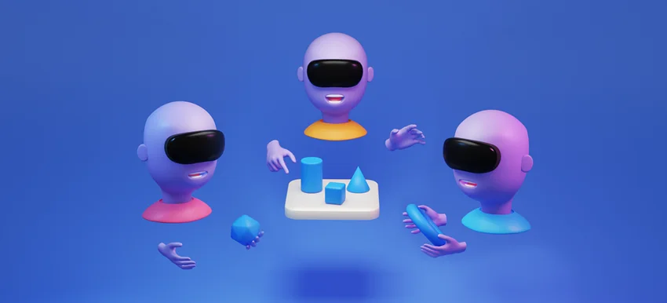
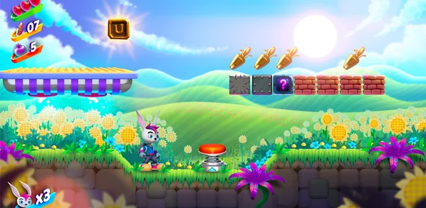
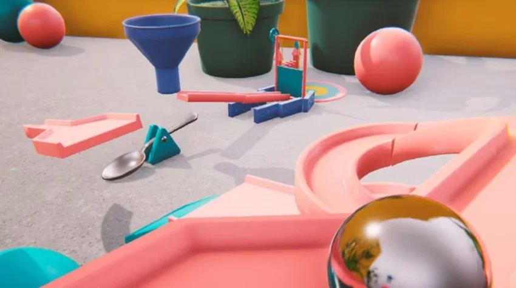
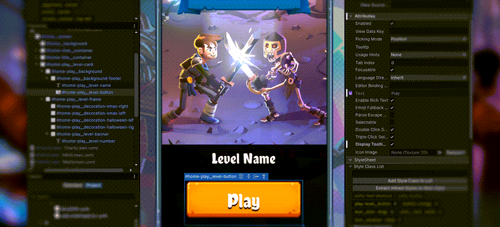
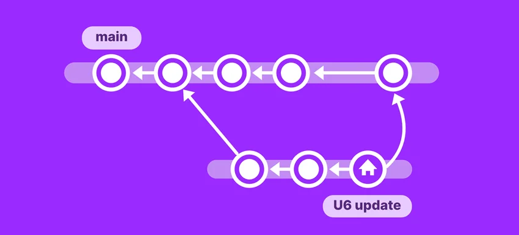
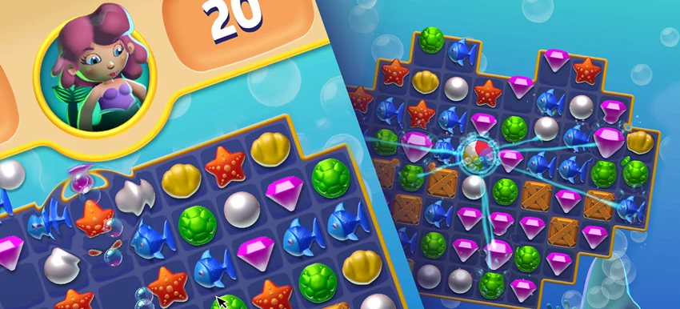
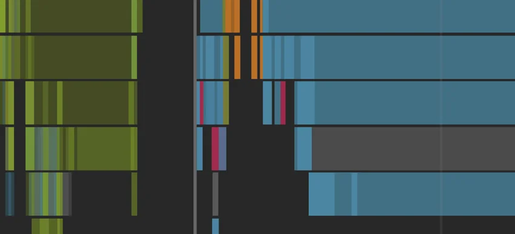
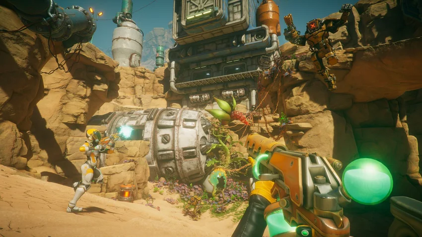
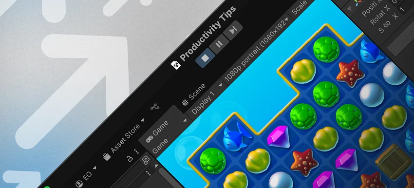

Discover and learn production-tested best practices from Unity experts in the following areas:

Read this e-book to get practical tips for working with the VR template in Unity, the XR Interaction Toolkit, Apple Vision Pro and visionOS, and more.
This guide aims to provide animators and technical artists with an in-depth understanding of the animation features in Unity. Learn about importing and exporting animations, humanoid animations, shortcuts, animating UI, events, and more.

Our popular 2D e-book is now updated to include techniques and workflows for developing a professional 2D game in Unity 6.3 LTS. Get best practices for art, design, animation, lights, and VFX, plus tips on how to use 3D assets in 2D games.

This guide is designed to help experienced game designers learn how to prototype their ideas in Unity for more efficient creation and team collaboration. Learn about visual scripting, creating input, level design tools, microinteractions, and more.

This guide for UI artists, UI designers, and UI programmers illustrates many features-in-action with examples from two official Unity UI Toolkit samples. Each section in the e-book focuses on specific toolsets, making it easy to choose the most relevant parts for your role.
Written by professional level designers in the gaming industry and Unity product experts, this guide provides career tips and instructions on using Unity tools suited to worldbuilding, such as Unity ProBuilder and the Terrain system.

This guide explains the key concepts of version control, compares some of the different version control systems available, and provides an introduction to additional Unity DevOps tools like Unity Asset Manager and Build Automation.
This e-book covers the creation of versatile shaders and visual effects with URP in Unity 6. You’ll find steps for creating a toon and outline shader with Shader Graph, creating X-ray-like image effects with stencils, and more.
Get in-depth guidance on how to set up URP for a new project, work with URP Quality Settings, Adaptive Probe Volumes, URP and custom shaders, HLSL includes, and more.
This edition of the e-book covers all the capabilities included in HDRP in Unity 6 and 6.1, such as lighting, environment effects, and performance and optimization.
Use this comprehensive guide to learn how to incorporate the VFX Graph into your applications. It includes specific instructions on how to use the VFX Graph, and its related tools, to build real-time visual effects in Unity 6.

This guide brings together all the best and latest mobile, XR, and Unity Web performance optimization tips for Unity 6.
This guide brings together all the best and latest PC and console performance optimization tips available in Unity 6.

This updated guide provides advanced knowledge and tips for profiling, memory management, and power consumption optimization with Unity 6 profiling tools.

This guide helps you get familiar with the latest Unity features and workflows. It covers Editor navigation, setting up your development environment, Unity’s profiling tools, physics, and Input Systems.

This 100+ page guide offers tips to speed up your workflows throughout every stage of game development. The guide focuses on Editor navigation, working in 2D, debugging and profiling, URP, HDRP, UI Toolkit, and more.
Read this guide to learn how to use and adapt existing industry standard code style guides. It explores the benefits of following consistent naming conventions, formatting, commenting on code, and more.
Read this guide to explore the core concepts of Unity multiplayer, different multiplayer systems and networking models, and an example of using Netcode for GameObjects.
Updated for Unity 6, this guide is a valuable primer for experienced Unity developers who are considering implementing Unity’s Data-Oriented Technology Stack (DOTS) in their projects.
This edition of the e-book assembles tips and tricks from professional developers for deploying ScriptableObjects in production. These include examples of how to apply them to specific design patterns and how to avoid common pitfalls.
This e-book explores SOLID principles and design patterns for game development with eleven practical examples to help you write maintainable and scalable game code.